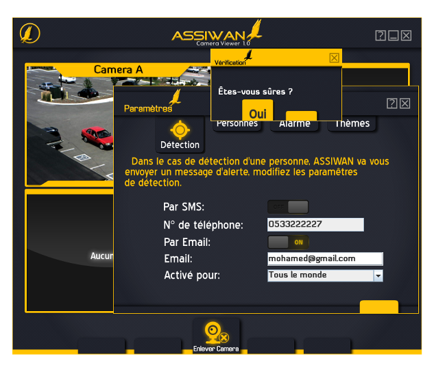
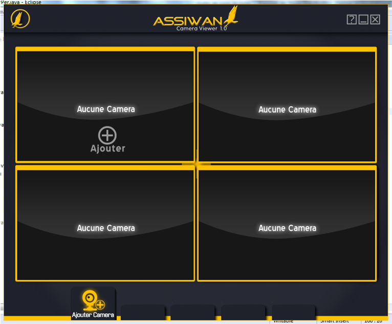

ASSIWAN Camera Viewer 1.0
Accueil
Interface utilisateur compréhension
Maintenance du système
Ressources
Bienvenue sur ASSIWAN Camera Viewer
ASSIWAN Camera Viewer est un logiciel qui permet de Mettre en place un système de vidéo surveillance efficace,
à partir de WebCam sur port USB de votre PC , un system de détection et de récognition des personnes,
au même temps, automatiquement et d’une méthode efficace et spécifique, et aussi d’envoyer des notifications à l’utilisateur.
Vous pouvez contrôler et afficher jusqu'à 4 flux caméra simultanément.
ASSIWAN Camera Viewer vous permet d'organiser et de regrouper vos caméras et de les visualiser sur un seul écran.
Vous pouvez modifier l'agencement et aperçu disposition des caméras pour vos besoins de sécurité.
Faire de la vidéo en direct claire en ajustant les propriétés d'image de l'appareil photo et vidéo tels que
la résolution, le frame rate pour les caméras USB et la saturation, la luminosité,
le contraste pour caméra USB et webcams.

|
|
Interface utilisateur compréhension
L'interface de l'application est conviviale et offre un
accès rapide à toutes les fonctions importantes.

1- Barre des boutons principaux de la fenêtre :
Contient le bouton de quitter, le bouton de réduire et
le bouton d’affichage d’aide.
2- Bouton d’aller à l’accueil:
Ce bouton permet à l’utilisateur d’aller à la page Web d’accueil.
3- Aperçu de la caméra fenêtre:
Chaque caméra est ajoutée dans une fenêtre d'aperçu séparée.
Caméra sélectionnée est affichée avec une bordure autour de la fenêtre
de prévisualisation, portant le nom d’affichage de caméra. Un bouton de réessayer
la connexion dans le cas de perdre la connexion au flux de la caméra.
4- Barre d’outils : Affiche les fonctions les plus souvent utilisées, qu’on va
expliquer dans les modules suivants.
|